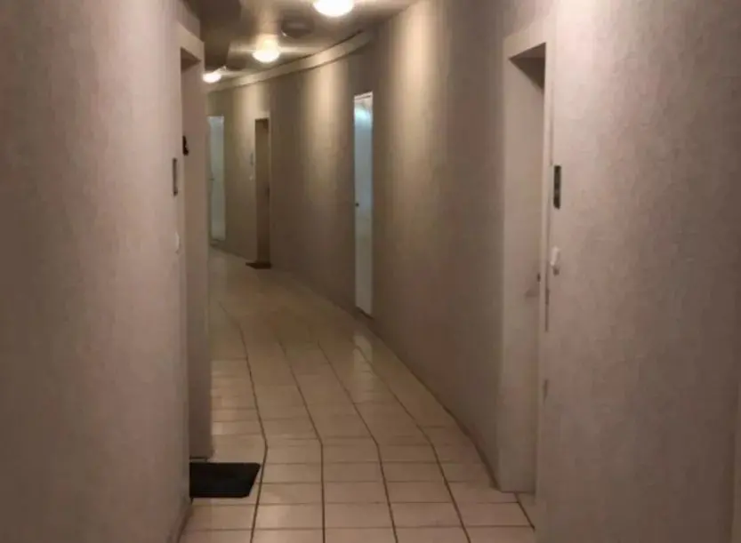

右键检查，复制链接，浏览器访问就可以直接下载。
怪核、梦核、池核、阈限……这些给了你怎样的感觉？哈，很有魅力的。

《Hi》
《It’s just a burning memory》
《夜跑金曲Level !》
《Level ! Soundtrack》
《Time》
《==儿童金曲==mopemope》：暂无
《Always with me》
莫扎特《土耳其进行曲》
《Funky Town》
《Creeper？Aw man》
《Shed a light（启动的小曲）》
《GigaGhad Theme（启动的小曲）》
未完成的列表，请实现一个支持初始化列表的构造函数（C++?? 起）。